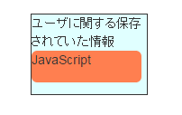
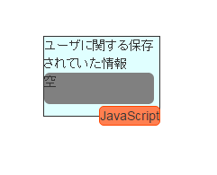

ブロックの中に情報を入れて処理を変えてみる
次のシミュレーションでは、先ほどのブロックの中にさらに様々な情報をセットできるようになっています

情報の追加による処理の変化
ブロックの中に情報を付加することで、外側のブロックの情報の中に中のブロックに関する情報を埋め込んだことと同義になります
上の図ではHTMLリクエストの中にユーザIDとパスワードに関する情報が埋め込まれたことを示します。
埋め込まれた情報をもとに、シミュレーションシステムは情報の処理を行います。
埋め込まれた情報は他の部分の表示に影響を与えていることがあります。確認してみましょう
ブロックの中に情報を入れる方法
ブロックの中にブロックを入れるためには以下の操作を行います
- 任意の入れたい情報をドラッグ
- 入れる先のブロックまでドラッグして重ねる 
- 入れた先のブロックにオレンジ色の要素として追加されていたら完了